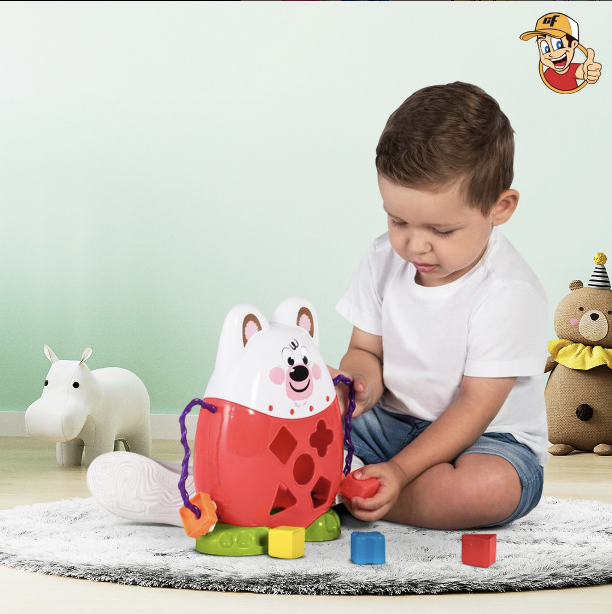
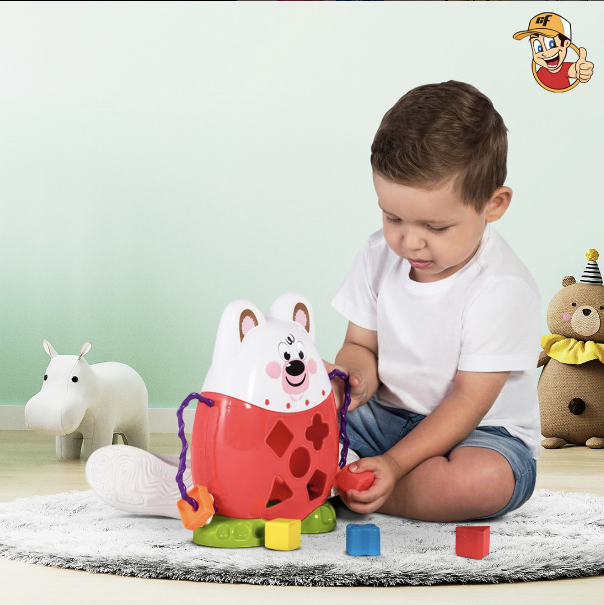
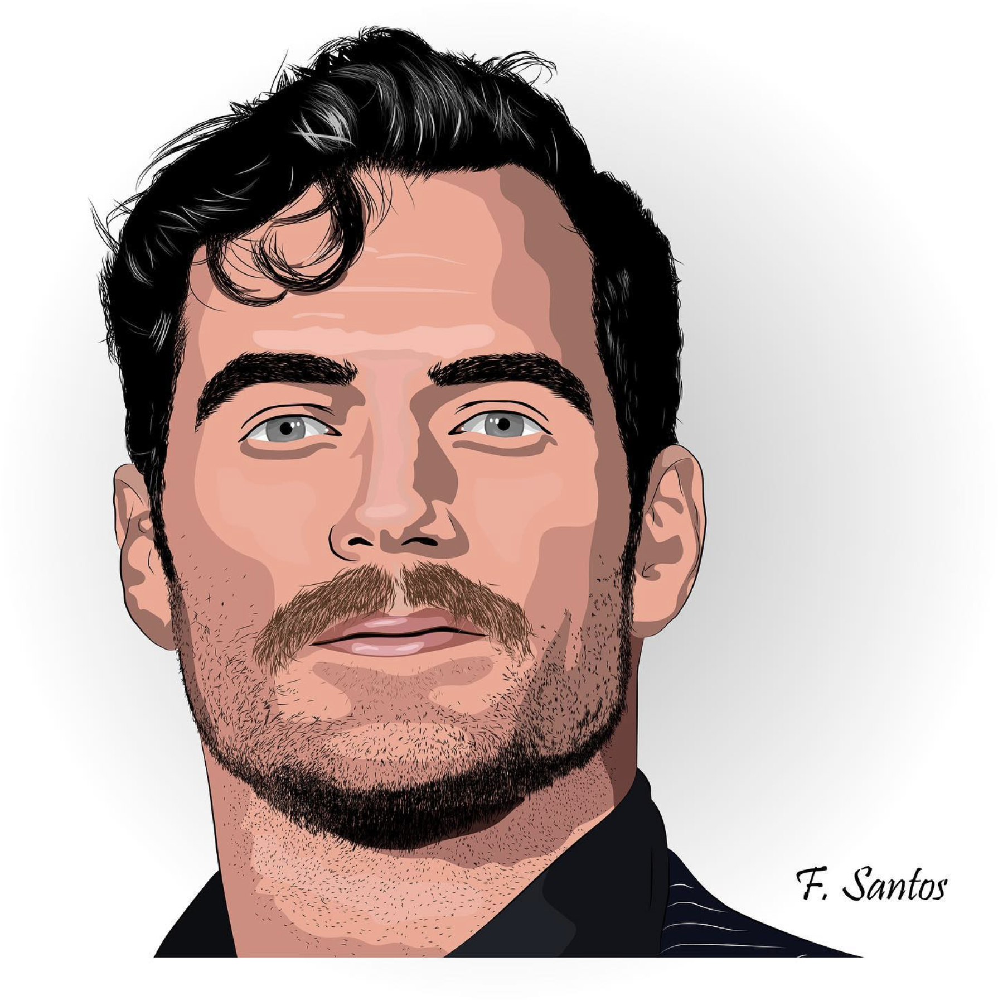
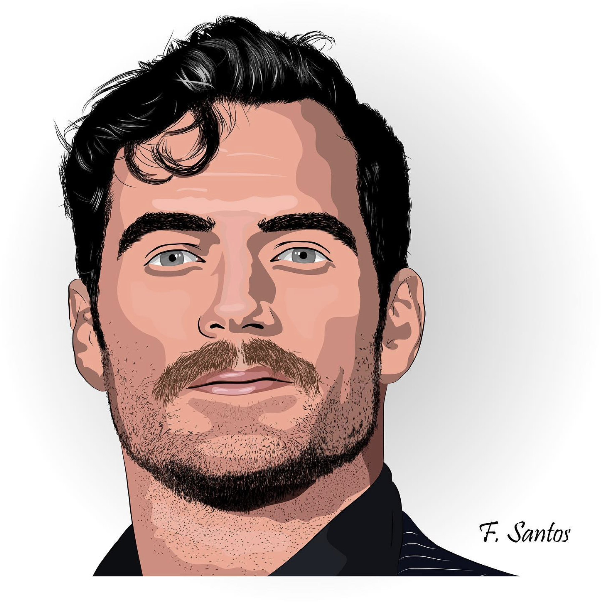
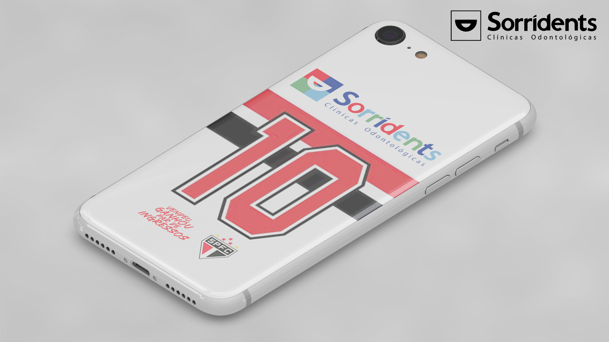
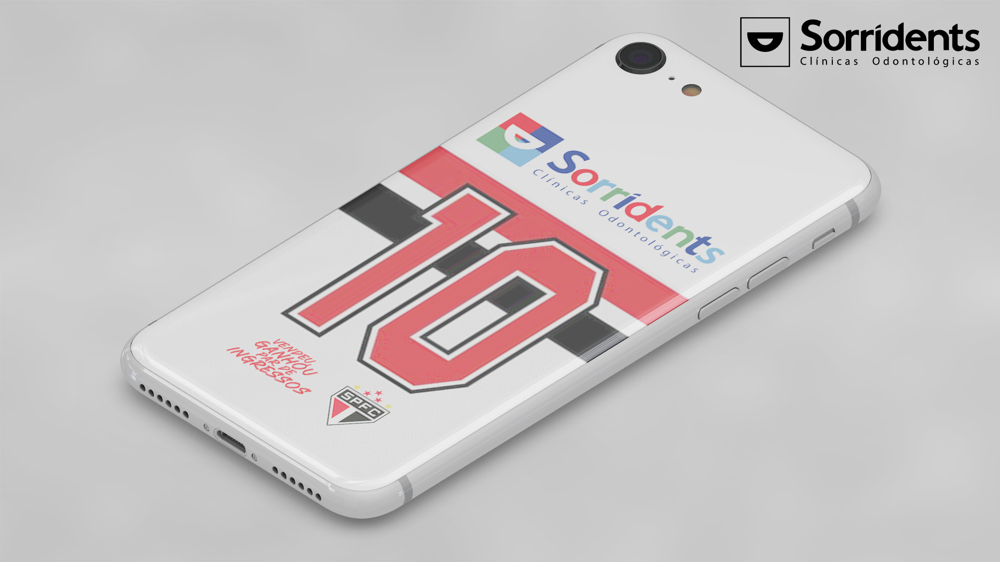

![]()
Sou um Designer Gráfico formado, apaixonado por traduzir ideias em imagens cativantes. Atualmente, estou imerso no mundo da Análise e Desenvolvimento de Sistemas, onde aprimoro minha habilidade em dar vida às inovações tecnológicas. Acredito que a criatividade é a ponte entre o design e a tecnologia, potencializando soluções visuais e funcionais. Essa combinação dinâmica não só enriquece minha jornada profissional, mas também destaca a importância de abraçar a criatividade e a tecnologia para construir experiências impactantes e eficientes.

MINHAS ESPECIALIDADES.
Social Media
Com três anos de experiência em gestão de redes sociais, destaco minha atuação bem-sucedida com diversas empresas, incluindo oficinas mecânicas, lojas de produtos domésticos, empresas de eventos e fornecedores de brindes corporativos. Minha expertise abrange desde a criação de conteúdo estratégico até a análise de métricas, proporcionando um crescimento consistente da presença online e o engajamento eficaz com o público-alvo.
Web site
Atualmente, estou imerso no desenvolvimento de um novo projeto: a criação de um site inovador. Minha abordagem combina design intuitivo, funcionalidades avançadas e uma experiência do usuário excepcional. Animado para compartilhar em breve essa iniciativa que promete destacar a presença online de maneira impactante.
Hobby
Minha maior paixão reside na arte de fotografar, um hobby que cultivo com entusiasmo. Dedico meu olhar atento à captura de paisagens deslumbrantes, flores delicadas e monumentos imponentes. Cada clique é uma expressão do meu apreço pela beleza do mundo ao meu redor.

MUITO PRAZER, SOU FELIPE SANTOS
Sou Felipe dos Santos, tenho 24 anos e sou formado em Design Gráfico pela Universidade Nove de Julho desde 2019. Com seis anos de experiência, estou sempre aprimorando minhas habilidades e trabalhando em projetos que refletem minha paixão pela estética e criatividade. Recentemente, em 2022, decidi expandir meus conhecimentos ingressando em Análise e Desenvolvimento de Sistemas, com o objetivo de me aprofundar em linguagens de programação como HTML, CSS e JS. Isso visa ampliar minhas competências e me permitir contribuir ainda mais para o design e o desenvolvimento web. Com uma base sólida em Design Gráfico e um crescente entusiasmo por sistemas e programação, estou determinado a unir essas áreas, oferecendo soluções inovadoras e esteticamente agradáveis. Acredito que essa combinação de habilidades me capacitará a enfrentar desafios multidisciplinares e a criar soluções impactantes e visualmente atraentes.
MEU PORTFÓLIO.
Importância da Social Media
Alcance e visibilidade: Mais de 3,6 bilhões de pessoas usam mídias sociais globalmente, representando cerca de 45% da população mundial.
Engajamento do cliente: Mais de 90% dos usuários de mídia social interagem com marcas por meio de suas plataformas preferidas.
Influência na decisão de compra: Cerca de 54% dos consumidores usam as redes sociais para pesquisar produtos antes de fazer uma compra.
Atendimento ao cliente: 70% dos consumidores preferem entrar em contato com as empresas por meio das redes sociais do que por outros canais tradicionais.
Feedback e insights: Mais de 80% das empresas usam dados de mídias sociais para informar suas estratégias de marketing e desenvolvimento de produtos.
Importância das Apresentações
Impressão inicial: Uma apresentação comercial bem feita pode causar uma excelente primeira impressão, capturando a atenção do público-alvo desde o início.
Comunicação eficaz: Ela permite que a empresa comunique de forma clara e persuasiva os benefícios de seus produtos ou serviços, destacando as soluções que oferece para as necessidades dos clientes.
Construção de confiança: Uma apresentação profissional transmite confiança e credibilidade, ajudando a construir relacionamentos sólidos com clientes em potencial.
Diferenciação da concorrência: Destacar os pontos fortes da empresa e o que a torna única no mercado pode ajudar a diferenciá-la da concorrência.
Fechar negócios: Uma apresentação comercial convincente pode levar diretamente ao fechamento de negócios, convertendo leads em clientes pagantes.
Importância das Ilustrações
Minha paixão por ilustrar o rosto no Illustrator é muito mais do que o ato de desenhar;
É um processo de descoberta, de expressão e de conexão, uma jornada que começa com linhas e cores e termina com a criação de algo verdadeiramente extraordinário.
Importância das Fotografias
Meu amor por fotografar paisagens, vegetação e locais específicos surge de minha admiração pelo mundo natural e da vontade de capturar sua beleza e essência. Cada viagem para fazer fotos é um novo desafio, e procuro o momento em que a luz atinge os pontos ideais para mostrar a mágica da natureza. Observo a força bruta das árvores, o caos cuidadosamente organizado da vegetação e a narrativa existente nos locais específicos. Tudo isso me leva a um território desconhecido ao descobrir lugares novos e tirar fotos que contam histórias sem palavras. Por meio da fotografia, aprendi a enxergar além do que está visível, a achar beleza nos detalhes e a ver a necessidade de salvar e conservar o mundo natural.


 



.jpg)

 



 
